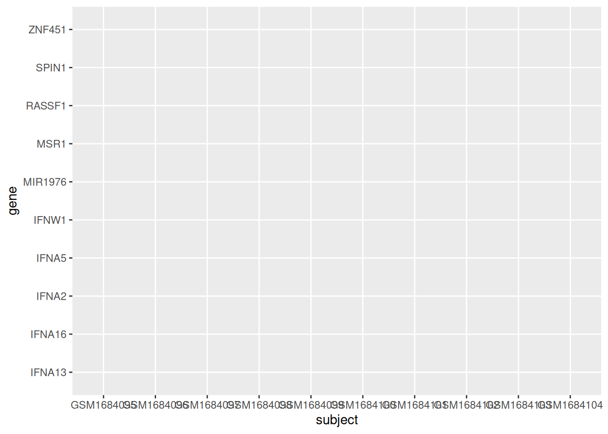
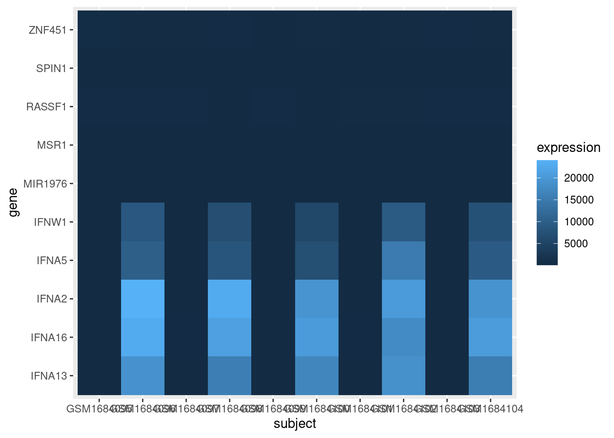
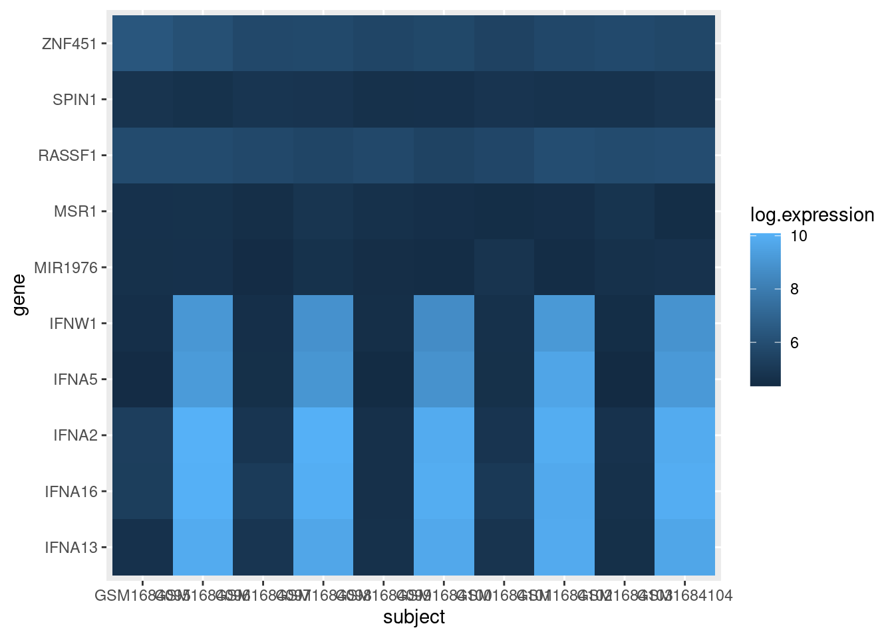
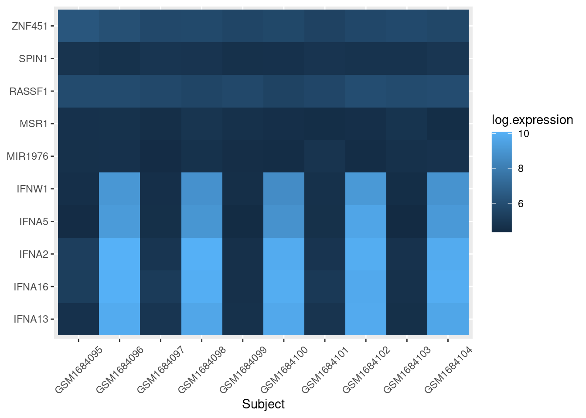
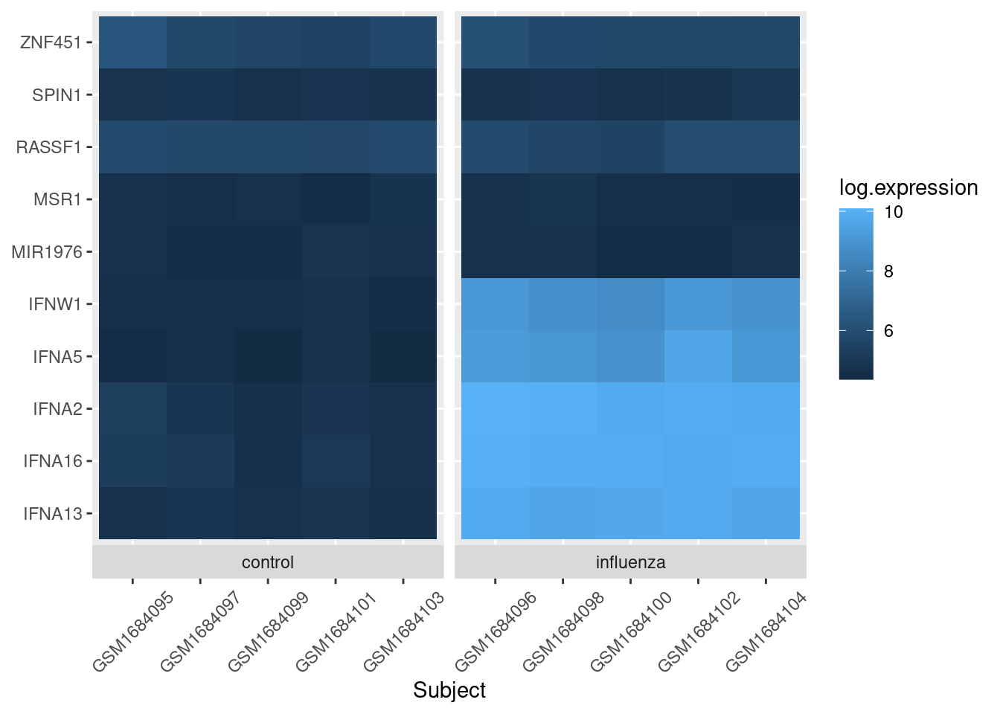

dir.create("data")
dir.create("output")Heatmaps - the gene expression edition
An application of heatmap visualization to investigate differential gene expression.
Learning objectives
- Manipulate data into a ‘tidy’ format
- Visualize data in a heatmap
- Become familiar with
ggplotsyntax for customizing plots
Heatmaps for differential gene expression
Heatmaps are a great way of displaying three-dimensional data in only two dimensions. But how can we easily translate tabular data into a format for heatmap plotting? By taking advantage of “data munging” and graphics packages, heatmaps are relatively easy to produce in R.
Getting started
First we need to setup our development environment. Open RStudio and create a new project via:
- File > New Project…
- Select ‘New Directory’
- For the Project Type select ‘New Project’
- For Directory name, call it something like “r-expression” (without the quotes)
- For the subdirectory, select somewhere you will remember (like “My Documents” or “Desktop”)
We are going to start by isolating different types of information by imposing structure in our file management. That is, we are going to put our input data in one folder and any output such as plots or analytical results in a different folder. We can use the dir.create() function to create these two folders:
For this lesson, we will use a subset of data on a study of gene expression in cells infected with the influenza virus (doi: 10.4049/jimmunol.1501557). The study infected human plasmacytoid dendritic cells with the influenza virus, and compared gene expression in those cells to gene expression in uninfected cells. The goal was to see how the flu virus affected the function of these immune system cells. The data for this lesson is available at: http://tinyurl.com/flu-expression-data or https://jcoliver.github.io/learn-r/data/GSE68849-expression.csv. Download this comma separated file and put it in the “data” folder.
Finally, we will be using two packages that are not distributed with the base R software, so we need to install them. Note that you only have to install packages once on your machine.
install.packages("ggplot2")
install.packages("tidyr")Data Wrangling
We’ll need to start by reading the data into memory then formatting it for use by the ggplot package. We want all our work to be reproducible, so create a script where we can store all the commands we use to create the heatmap. We begin this script with brief information about the purpose of the script and load those two packages so we can use them:
# Gene expression heatmap
# Jeff Oliver
# jcoliver@email.arizona.edu
# 2017-09-14
library("tidyr")
library("ggplot2")And then we read the data into memory:
exp_data <- read.csv(file = "data/GSE68849-expression.csv",
stringsAsFactors = FALSE)Take a quick look at the data with the str command:
str(exp_data)'data.frame': 10 obs. of 12 variables:
$ subject : chr "GSM1684095" "GSM1684096" "GSM1684097" "GSM1684098" ...
$ treatment: chr "control" "influenza" "control" "influenza" ...
$ IFNA5 : num 83.1 10096.5 97.8 8181 81.7 ...
$ IFNA13 : num 107 18974 128 15647 103 ...
$ IFNA2 : num 195 24029 129 23060 101 ...
$ SPIN1 : num 121 108 127 124 104 ...
$ ZNF451 : num 569 432 304 320 271 ...
$ IFNA16 : num 190 23060 170 21248 101 ...
$ RASSF1 : num 353 353 308 267 309 ...
$ IFNW1 : num 95.4 8665.9 97 6903.5 94.5 ...
$ MSR1 : num 107 109 95 126 105 ...
$ MIR1976 : num 104 106.3 82.8 108.9 91.4 ...The data frame has 10 rows (or subjects) and 12 columns (or variables). The first two columns have information about the observation (subject, treatment), and the remaining columns have measurements for the expression of 10 genes.
We ultimately want a heatmap where the different subjects are shown along the x-axis, the genes are shown along the y-axis, and the shading of the cell reflects how much each gene is expressed within a subject. This latter value, the measure of gene expression, is really just a third dimension. However, instead of creating a 3-dimensional plot that can be difficult to visualize, we instead use shading for our “z-axis”. To this end, we need our data formatted so we have a column corresponding to each of these three dimensions:
- X: Subject ID
- Y: Gene symbol
- Z: Expression
The challenge is that our data are not formatted like this. While the subject column corresponds to what we would like for our x-axis, we do not have columns that correspond to what is needed for the y- and z-axes. All the data are in our data frame, but we need to take a table that looks like this:
| subject | treatment | IFNA5 | IFNA13 | IFNA2 |
|---|---|---|---|---|
| GSM1684095 | control | 83.129 | 107.219 | 195.175 |
| GSM1684096 | influenza | 10096.47 | 18974.16 | 195.175 |
| … | … | … | … |
And transform it to one with a column for the gene and a column for expression, like this:
| subject | gene | expression |
|---|---|---|
| GSM1684095 | IFNA5 | 83.129 |
| GSM1684095 | IFNA13 | 107.219 |
| GSM1684095 | IFNA2 | 195.175 |
| GSM1684096 | IFNA5 | 10096.47 |
| GSM1684096 | IFNA13 | 18974.16 |
| GSM1684096 | IFNA2 | 24029.11 |
| … | … | … |
Thankfully, there is a function in the tidyr package called pivot_longer that is designed for creating this type of “tidy”” data.
exp_long <- pivot_longer(data = exp_data,
cols = everything(),
names_to = "gene",
values_to = "expression")Error in `pivot_longer()`:
! Can't combine `subject` <character> and `IFNA5` <double>.Uh oh. That error is preventing us from transforming our data to long format. What R is telling us is that we tried to create a column with multiple data types in it, which is a big no-no in R. That is, it attempted to make a single column that had both the data from the “subject” column (which are text) with the data from the “IFNA5” column (which are numbers).
We will need to tell pivot_longer to ignore the “subject” column in our original data frame during the transformation. By ignoring that column, R will carry the values over into our new data frame. We ignore columns by adding their names, preceded by a negation symbol(“-”), to the pivot_longer call (we’re going to ignore the treatment column, too, to make sure it ends up in our exp_long data frame):
exp_long <- pivot_longer(data = exp_data,
cols = -c(subject, treatment),
names_to = "gene",
values_to = "expression")
head(exp_long)# A tibble: 6 × 4
subject treatment gene expression
<chr> <chr> <chr> <dbl>
1 GSM1684095 control IFNA5 83.1
2 GSM1684095 control IFNA13 107.
3 GSM1684095 control IFNA2 195.
4 GSM1684095 control SPIN1 121.
5 GSM1684095 control ZNF451 569.
6 GSM1684095 control IFNA16 190. Aha! Much better.
To recap, at this point we loaded in the libraries we are dependent on, read in data from a file, and transformed the data for easy use with heatmap tools:
# Gene expression heatmap
# Jeff Oliver
# jcoliver@email.arizona.edu
# 2017-09-14
library("tidyr")
library("ggplot2")
# Read in the data
exp_data <- read.csv(file = "data/GSE68849-expression.csv",
stringsAsFactors = FALSE)
# Transform to "long" format
exp_long <- pivot_longer(data = exp_data,
cols = -c(subject, treatment),
names_to = "gene",
values_to = "expression")Visualize the data!
For this plot, we are going to first create the heatmap object with the ggplot function, then print the plot. We create the object by assigning the output of the ggplot call to the variable exp_heatmap, then entering the name of this object to print it to the screen.
exp_heatmap <- ggplot(data = exp_long, mapping = aes(x = subject,
y = gene,
fill = expression))
exp_heatmap
What happened? Our plot doesn’t show any data!? Here is where functionality of ggplot is evident. The way it works is by effectively drawing layer upon layer of graphics. So we have established the plot, we told R what to put on the X and Y axes, but we need to add one more bit of information to tell ggplot how to display data in the plot area. For a heat map, we use geom_tile(), literally adding this to the ggplot object with a plus sign (+):
exp_heatmap <- ggplot(data = exp_long, mapping = aes(x = subject,
y = gene,
fill = expression)) +
geom_tile()
exp_heatmap
OK, that’s a good start. But we need to fix a few things:
- The scale of the expression values is dominated by a few very large values. We should transform the data to so it is easier to see the variation among low expression values.
- The axes could be displayed better.
- It would be nice to have all the infected cells on one side of the graph and the control cells on the other side of the graph.
- Finally, we should be able to save this plot to a pdf file.
To better visualize the variation of lower expression values, we can create a new column in our data frame with the log10 expression values and use that for the heatmap shading:
exp_long$log.expression <- log(exp_long$expression)
exp_heatmap <- ggplot(data = exp_long, mapping = aes(x = subject,
y = gene,
fill = log.expression)) +
geom_tile()
exp_heatmap
Note we also had to update the value we pass to the fill parameter in the aes call of ggplot.
For the axes clean up, we’ll use a nicer label for the x-axis title, rotate the values of the x-axis labels, and omit the title of the y-axis entirely:
exp_heatmap <- ggplot(data = exp_long, mapping = aes(x = subject,
y = gene,
fill = log.expression)) +
geom_tile() +
xlab(label = "Subject") + # Add a nicer x-axis title
theme(axis.title.y = element_blank(), # Remove the y-axis title
axis.text.x = element_text(angle = 45, vjust = 0.5)) # Rotate the x-axis labels
exp_heatmap
To separate out the control cells from flu cells, we use the facet_grid layer of ggplot:
exp_heatmap <- ggplot(data = exp_long, mapping = aes(x = subject,
y = gene,
fill = log.expression)) +
geom_tile() +
xlab(label = "Subject") +
# facet_grid makes two panels, one for control, one for flu:
facet_grid(~ treatment, switch = "x", scales = "free_x", space = "free_x") +
theme(axis.title.y = element_blank(),
axis.text.x = element_text(angle = 45, vjust = 0.5))
exp_heatmap
And the last thing is to save the image to a file. We can do this in a variety of ways, but the ggsave function will work fine in this case:
ggsave(filename = "output/expression-heatmap.pdf", plot = exp_heatmap)Our final script for this heatmap is then:
# Gene expression heatmap
# Jeff Oliver
# jcoliver@email.arizona.edu
# 2017-09-14
library("tidyr")
library("ggplot2")
exp_data <- read.csv(file = "data/GSE68849-expression.csv",
stringsAsFactors = FALSE)
exp_long <- pivot_longer(data = exp_data,
cols = -c(subject, treatment),
names_to = "gene",
values_to = "expression")
exp_long$log.expression <- log(exp_long$expression)
exp_heatmap <- ggplot(data = exp_long, mapping = aes(x = subject,
y = gene,
fill = log.expression)) +
geom_tile() +
xlab(label = "Subject") +
facet_grid(~ treatment, switch = "x", scales = "free_x", space = "free_x") +
theme(axis.title.y = element_blank(),
axis.text.x = element_text(angle = 45, vjust = 0.5))
ggsave(filename = "output/expression-heatmap.pdf", plot = exp_heatmap)Additional resources
- The entire data set of gene expression from NCBI is available at: https://www.ncbi.nlm.nih.gov/geo/query/acc.cgi?acc=GSE68849
- Paper describing tidy data
- A great introduction to data tidying
- A cheat sheet for data wrangling
- Official documentation for ggplot
- A cheat sheet for ggplot
- Documentation for
geom_bin2d, to create heatmaps for continuous x- and y-axes - A PDF version of this lesson